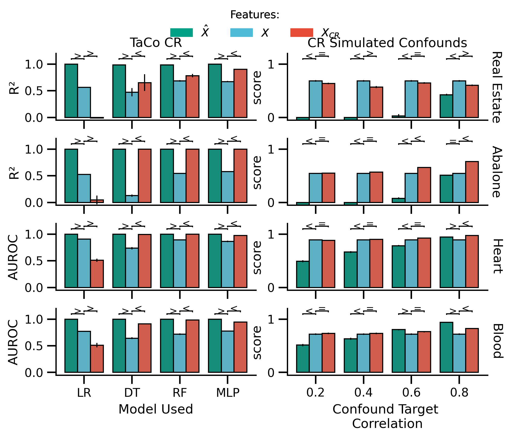
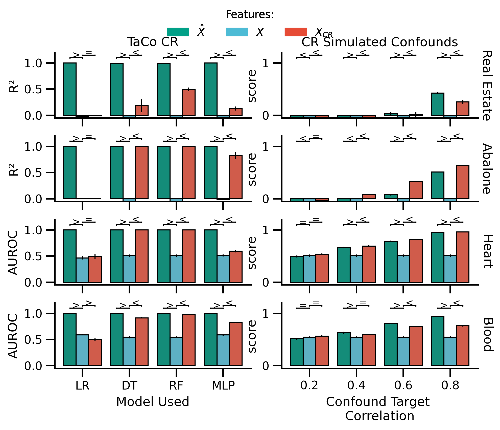
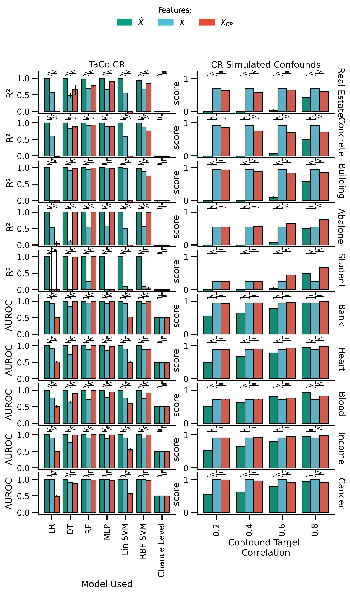
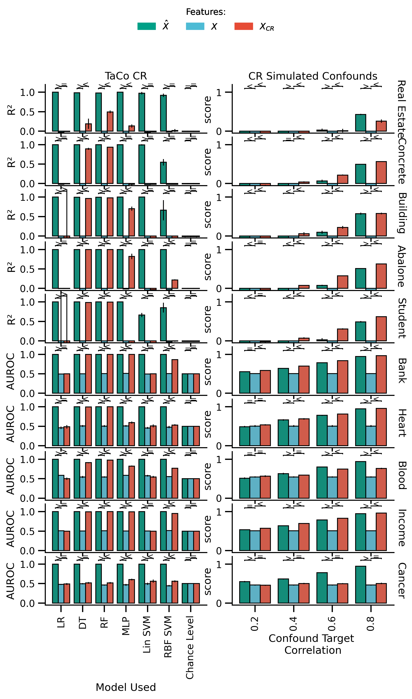

1 UCI Performance
Contents
1 UCI Performance¶
This notebook summarizes the performance and analysis on the UCI Datasets.
import numpy as np
import pandas as pd
import matplotlib as mpl
import matplotlib.pyplot as plt
from matplotlib.ticker import MultipleLocator
from sciplotlib import style
import seaborn as sns
from myst_nb import glue
from leakconfound.plotting import custom_bar_rope_plot, mm_to_inch
from leakconfound.plotting.settings import red, blue, green
from leakconfound.analyses.load import (
prepare_performance_data, gather_data, data_to_long, data_renamer, models_renamer)
Set MPL Settings¶
mpl.style.use(style.get_style('nature-reviews'))
mpl.rc('xtick', labelsize=11)
mpl.rc('ytick', labelsize=11)
mpl.rc('axes', labelsize=12, titlesize=12)
mpl.rc('figure', dpi=300)
mpl.rc('figure.subplot', wspace=mm_to_inch(4), hspace=mm_to_inch(7))
mpl.rc('lines', linewidth=1)
Load Datasets
results_base = '../../results/'
raw_TaCo_folder = f'{results_base}basic_TaCo/uci_datasets/'
shuffled_TaCo_folder = results_base + 'shuffled_features_TaCo/uci_datasets/'
# load raw TaCo dataset
arguments_TaCo = ['data', 'model_name',
'is_deconfounded', 'random_seed']
score_names = [
'test_r2', 'test_roc_auc',
'test_X_hat_r2', 'test_X_hat_roc_auc',
]
def correct_fold_repeat(df):
df.repeat = df.fold // 5
df.fold = df.fold % 5
return df
def convert_hat_scores(df):
_df = df.copy()
return (_df
.assign(
is_X_hat=lambda df: df.score_name.str.contains("X_hat")
)
.assign(
confound=lambda df: df.apply(
lambda row: "X hat" if row["is_X_hat"] else row["confound"], axis=1
))
.assign(
score_name=lambda df: df.score_name.str.replace("X_hat_", "")
)
)
def correct_columns(df):
return correct_fold_repeat(convert_hat_scores(df)).dropna()
Load Raw Data
df_TaCo = prepare_performance_data(raw_TaCo_folder,
analysis_arguments=arguments_TaCo,
score_names=score_names)
# load performance TaCo shuffled
df_TaCo_shuffled = prepare_performance_data(shuffled_TaCo_folder,
analysis_arguments=arguments_TaCo,
score_names=score_names).dropna()
arguments_TaCo.pop(2)
arguments_TaCo.extend(['confound'])
Subset TaCo data
order = ["Linear/Logistic", "Decision Tree",
"Random Forest", "Neural Network",
"Linear SVM", "RBF SVM", "Gaussian Model"]
datasets_selected = ["Abalone", "Heart", "Real Estate", "Blood"]
df_plot_TaCo_selected = (df_TaCo
.dropna()
.query('data in @datasets_selected')
.query(f'model_name in {order}')
.query(f"score_name in {score_names}")
)
df_plot_TaCo_shuffled_selected = (df_TaCo_shuffled
.query('data in @datasets_selected')
.query(f'model_name in {order}')
.query(f"score_name in {score_names}")
)
Data Retrieval non TaCo -> simulated confounds
def prepare_non_TaCo(shuffled):
used_model = 'Random Forest'
non_TaCo_folder = results_base + (
'/shuffled_features_non_TaCo/uci_sim_conf_datasets/' if shuffled
else '/basic_non_TaCo/uci_sim_conf_datasets/'
)
non_TaCo_arguments = ['data', 'model_name',
'is_deconfounded', 'random_seed']
df_non_TaCo = gather_data(non_TaCo_folder,
non_TaCo_arguments,
)
non_TaCo_arguments.append('conf_corr')
# adding how much correlation was used for the confounds
df_settings = (
df_non_TaCo
.data
.apply(lambda col: col.replace('real_estate', 'realestate'))
.apply(lambda col: pd.Series(col.split('_')))
.apply(lambda col: col.replace('realestate', 'real_estate'))
.rename(columns={0: 'data', 2: 'conf_corr'})
.drop(columns=[1])
)
df_non_TaCo = (
pd.concat([df_non_TaCo.drop(columns='data'), df_settings], axis=1)
.assign(
data=lambda df: df.data.map(data_renamer),
model_name=lambda df: df.model_name.map(models_renamer),
conf_corr=lambda df: df.conf_corr.apply(lambda x: '0.' + str(x))
)
)
df_plot_non_TaCo = (data_to_long(df_non_TaCo, non_TaCo_arguments,
score_names)
.query(f'(model_name == "{used_model}") & '
f'(score_name in {score_names})'
)
.dropna()
)
return df_plot_non_TaCo
df_plot_non_TaCo = prepare_non_TaCo(False)
df_plot_non_TaCo_shuffled = prepare_non_TaCo(True)
df_plot_non_TaCo_selected = (df_plot_non_TaCo
.dropna()
.query('data in @datasets_selected')
.query(f'model_name in {order}')
.query(f"score_name in {score_names}")
)
df_plot_non_TaCo_shuffled_selected = (df_plot_non_TaCo_shuffled
.query('data in @datasets_selected')
.query(f'model_name in {order}')
.query(f"score_name in {score_names}")
)
clean & correct Repeat and Fold & Scoring
df_plot_TaCo = correct_columns(df_TaCo)
df_plot_TaCo_shuffled = correct_columns(df_TaCo_shuffled)
df_plot_non_TaCo = correct_columns(df_plot_non_TaCo)
df_plot_non_TaCo_shuffled = correct_columns(df_plot_non_TaCo_shuffled)
df_plot_TaCo_selected = correct_columns(df_plot_TaCo_selected)
df_plot_TaCo_shuffled_selected = correct_columns(df_plot_TaCo_shuffled_selected)
df_plot_non_TaCo_selected = correct_columns(df_plot_non_TaCo_selected)
df_plot_non_TaCo_shuffled_selected = correct_columns(df_plot_non_TaCo_shuffled_selected)
Create a function to plot
def plot_performance(df_TaCo, df_non_TaCo, figsize=None, model_label_dict=None,
hue_order=None,
):
# col = 'features'
row = 'data'
x = 'model_name'
y = 'score'
hue = 'confound'
hue_order = ['not removed', 'removed'] if hue_order is None else hue_order
row_vals = df_TaCo[row].unique()
n_rows = len(row_vals)
rope_sign_fontsize = 9
used_model_dict = ({
'Linear/Logistic': 'LR',
'Decision Tree': 'DT',
'Random Forest': 'RF',
'Neural Network': 'MLP'
} if model_label_dict is None else model_label_dict
)
ylabel_dict = {
'test_roc_auc': 'AUROC',
'test_r2': 'R²'
}
fig, axes = plt.subplots(
nrows=n_rows, ncols=2, figsize=figsize)
for (i_row, row_val) in enumerate(row_vals): # ,
# enumerate(col_vals)):
ax = axes[i_row, 0]
data = df_TaCo.query(
'(score_name in ["test_r2", "test_roc_auc"] ) & '
f'({row} == @row_val)'
)
score_names = data.score_name.unique()
# assert len(score_names) == 1
score_name = score_names[0]
custom_bar_rope_plot(x, y, hue,
comparisons=(('X hat', 'not removed'), ('not removed', 'removed')),
comparisons_sing_y=[1.1, 1.15],
cv_repeats='repeat', data=data,
hue_order=hue_order,
order=list(used_model_dict.keys()),
palette=sns.color_palette([green, blue, red]),
ax=ax, show_legend=False,
rope_sign_fontsize=rope_sign_fontsize, rope_line_width=.5,
rope=0.05
)
if i_row == 0:
ax.set_title('TaCo CR',)
if i_row < len(row_vals)-1:
ax.set_xticklabels('', rotation=0)
ax.set_xlabel('')
else:
ax.set_xticklabels(
[used_model_dict[tick.get_text()] for tick in ax.get_xticklabels()], rotation=0,
)
ax.set_xlabel('Model Used', )
ax.set_ylabel(ylabel_dict[score_name], )
ax.set_yticks(np.arange(0, 1.25, .25))
ax.set_ylim([-0.05, 1.2])
ax.yaxis.set_major_locator(MultipleLocator(.5))
for (i_row, row_val) in enumerate(row_vals):
ax = axes[i_row, 1]
data = df_non_TaCo.query(
f'(model_name == "Random Forest") & ({row} == @row_val)')
custom_bar_rope_plot('conf_corr', y, hue,
comparisons=(('X hat', 'not removed'), ('not removed', 'removed')),
comparisons_sing_y=[1.1, 1.15],
cv_repeats='repeat', data=data,
hue_order=hue_order,
order=['0.2', '0.4', '0.6', '0.8'],
palette=sns.color_palette([green, blue, red]),
rope_sign_fontsize=rope_sign_fontsize,
rope_line_width=.5,
ax=ax, show_legend=False,
rope=0.05
)
if i_row == 0:
ax.set_title('CR Simulated Confounds',)
if i_row < len(row_vals)-1:
ax.set_xticklabels('')
ax.set_xlabel('')
else:
ax.set_xticklabels(ax.get_xticklabels(),
rotation=0)
ax.set_xlabel('Confound Target \nCorrelation',)
ax.set_ylim([-0.05, 1.2])
axR = ax.twinx()
axR.set_yticks([])
axR.set_ylabel(row_val, rotation=270, labelpad=8,
horizontalalignment='center', verticalalignment='center'
)
handles = [
mpl.patches.Patch(color=green, label=r'$\hat{X}$'),
mpl.patches.Patch(color=blue, label='$X$'),
mpl.patches.Patch(color=red, label='$X_{CR}$')
]
fig.legend(handles=handles,
title="Features:",
loc='upper center',
ncol=3,)
return fig, axes
Plotting Performance for Selected Datapoints¶
fig_selected, axes = plot_performance(
df_plot_TaCo_selected,
df_plot_non_TaCo_selected,
hue_order=["X hat", "not removed", "removed"],
figsize=[mm_to_inch(183),
mm_to_inch(140)])
fig_selected.savefig('./saved_figures/uci_performance.svg')
fig_selected.savefig('./saved_figures/uci_performance.png')
glue("uci_selected", fig_selected, display=False)
fig_shuffled_selected, axes = plot_performance(
df_plot_TaCo_shuffled_selected,
df_plot_non_TaCo_shuffled_selected,
hue_order=["X hat", "not removed", "removed"],
figsize=[mm_to_inch(183),
mm_to_inch(140)])
fig_shuffled_selected.savefig('./saved_figures/uci_performance_shuffled.svg')
fig_shuffled_selected.savefig('./saved_figures/uci_performance_shuffled.png')
glue("uci_selected_shuffled", fig_shuffled_selected, display=False)
Plotting Performance for All Datapoints¶
all_model_dict = {
'Linear/Logistic': 'LR',
'Decision Tree': 'DT',
'Random Forest': 'RF',
'Neural Network': 'MLP',
'Linear SVM': 'Lin SVM',
'RBF SVM': 'RBF SVM',
'Baseline Model': 'Chance Level',
}
with mpl.rc_context({
'figure.subplot.wspace': mm_to_inch(4),
'figure.subplot.hspace': mm_to_inch(2)
}):
fig_all, axes = plot_performance(
df_plot_TaCo,
df_plot_non_TaCo,
figsize=[mm_to_inch(183),
mm_to_inch(280)],
model_label_dict=all_model_dict,
hue_order=["X hat", "not removed", "removed"],
)
axes[-1, 0].set_xticklabels(axes[-1, 0].get_xticklabels(), rotation=90)
axes[-1, 1].set_xticklabels(axes[-1, 1].get_xticklabels(), rotation=90)
glue("uci_all", fig_all, display=False)
fig_all.savefig('./saved_figures/uci_performance_all.svg')
fig_all.savefig('./saved_figures/uci_performance_all.png')
with mpl.rc_context({
'figure.subplot.wspace': mm_to_inch(4),
'figure.subplot.hspace': mm_to_inch(2)
}):
fig_all_shuffled, axes = plot_performance(
df_plot_TaCo_shuffled,
df_plot_non_TaCo_shuffled,
figsize=[mm_to_inch(183),
mm_to_inch(280)],
model_label_dict=all_model_dict,
hue_order=["X hat", "not removed", "removed"],
)
axes[-1, 0].set_xticklabels(axes[-1, 0].get_xticklabels(), rotation=90)
axes[-1, 1].set_xticklabels(axes[-1, 1].get_xticklabels(), rotation=90)
glue("uci_all_shuffled", fig_all_shuffled, display=False)
fig_all_shuffled.savefig('./saved_figures/uci_performance_all_shuffled.svg')
fig_all_shuffled.savefig('./saved_figures/uci_performance_all_shuffled.png')
These are the Figures¶



